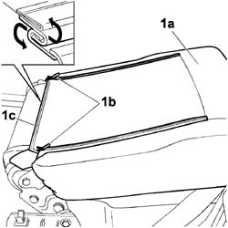
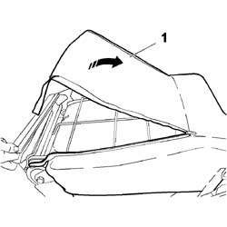
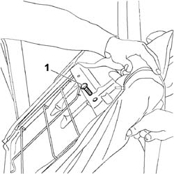
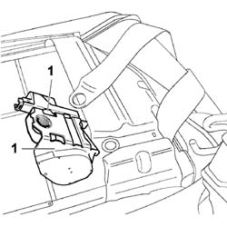

7065B38 load compartment seat central seat belt - r r
- Path
- Procedures > 70 FITTINGS > 7065 SEAT BELTS AND ACCESSORIES > 7065B rear safety belts > 7065B38 load compartment seat central seat belt - r r
- Kind
- repair procedure (removal / refitting; the operation number is the code)
- Applies to
- engines: 1.4 8v, 1.6 16v, 1.3 JTD 16V, 1.9 JTD 8V; all production periods
- Interactive page
- https://sloeber94.github.io/elrnDB-fDbl/en/#/2585235
Applies to: engines: 1.4 8v, 1.6 16v, 1.3 JTD 16V, 1.9 JTD 8V; all production periods; only with equipment: 7 seater
 Removing
Removing
 Refitting
RefittingOp. 7065B14 ANCHORAGE ROD FOR (ONE) REAR SEAT BELT LEFT OR RIGHT - R.R.
1. Fold down backrest (1a), adjust hinges (1b) and release lower plastic edging (1c).

Applies to: engines: 1.4 8v, 1.6 16v, 1.3 JTD 16V, 1.9 JTD 8V; all production periods; only with equipment: 7 seater
1. Raise the backrest trim.

Applies to: engines: 1.4 8v, 1.6 16v, 1.3 JTD 16V, 1.9 JTD 8V; all production periods; only with equipment: 7 seater
1. Unscrew the seat belt retaining bolt.

Applies to: engines: 1.4 8v, 1.6 16v, 1.3 JTD 16V, 1.9 JTD 8V; all production periods; only with equipment: 7 seater
1. Withdraw the seat belt from the seat backrest.

Applies to: engines: 1.4 8v, 1.6 16v, 1.3 JTD 16V, 1.9 JTD 8V; all production periods; only with equipment: 7 seater
Refitting
RemovingPosition the seat belt in its seat.
Tighten the bolt securing the seat belt.
Position the backrest trim.
Clsoe the side hinges and fit the lower plastic edging.
Restore the backrest to driving position.
Op. 7065B14 ANCHORAGE ROD FOR (ONE) REAR SEAT BELT LEFT OR RIGHT - R.R.